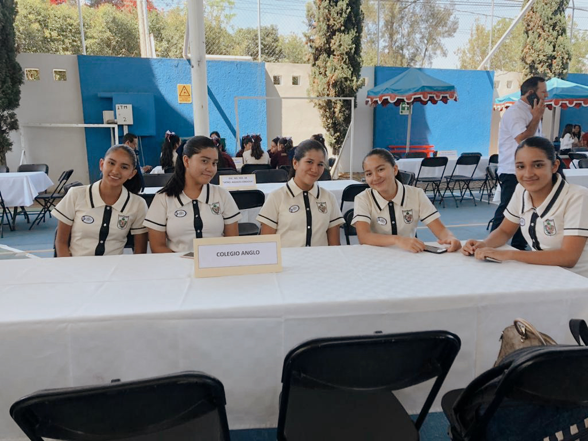

Escolta
La escolta fue una actividad que siempre capto mi interes, participe en ella mis tres años de secundaria
en la cual formaba parte en la escolta de actos cívicos en la cual entre por talento y promedio que debía ser los mejores 6
de mi generación y en la de competencia el único requisito era talento y compromiso.
Al participar en la escolta de competencia ensayamos arduamente para la competencia con escuelas locales, en dicha competencia
nos llevamos el primer lugar y en seguida comenzaron los ensayos para la competencia estatal la cual tenia sede en Morelia, Mich.
Obtuvimos un cuarto lugar en la competencia estatal.
Ser parte de la escolta mis tres años academicos de secundaria me ayudo en la disciplina y responsabilidad con mis horarios y organización
académica.